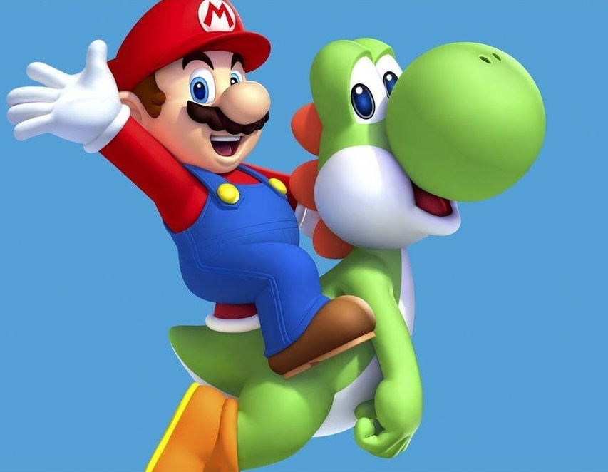

Mario é um personagem fictício da franquia e série de jogos eletrônicos Mario da Nintendo, criado pelo desenvolvedor e designer de jogos eletrônicos japonês Shigeru Miyamoto. Servindo como mascote da Nintendo e protagonista homônimo da série, Mario já apareceu em mais de 200 jogos desde sua criação.
Mario é retratado como um encanador italiano baixinho rechonchudo e bigodudo vindo do Brooklyn que reside no Reino dos Cogumelos. Ele repetidamente tem a missão de resgatar a Princesa Peach, do vilão Bowser e impedir seus diversos planos de destruir e dominar o reino. Mario também tem outros inimigos ou rivais, incluindo Donkey Kong e Wario.
Super Mario não estreou nos videogames em um jogo próprio. O herói foi criado por Shigeru Miyamoto para ser o principal inimigo de Donkey Kong, no fliperama de mesmo nome. Mario, chamado na época de “Jump Man”, tinha a missão de resgatar a princesa das garras do macacão.
O jogo era bem simples e funciona como um tipo de plataforma único. Era preciso subir diversas vigas e evitar os obstáculos para derrotar Donkey Kong e salvar a princesa. O sucesso, claro, veio facilmente e ajudou a criar a série principal.
